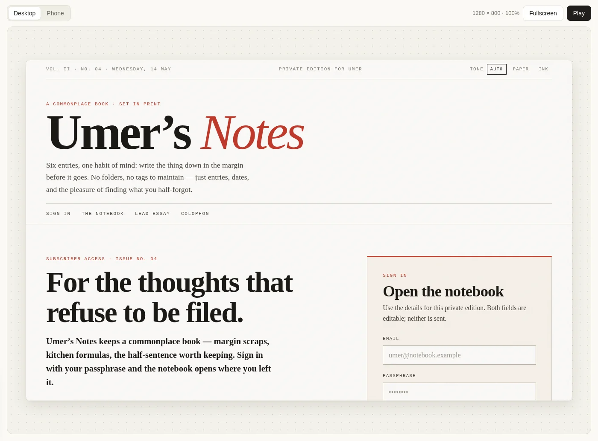
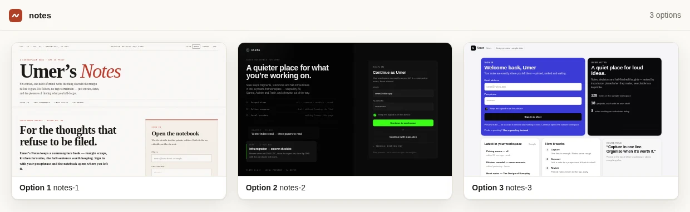
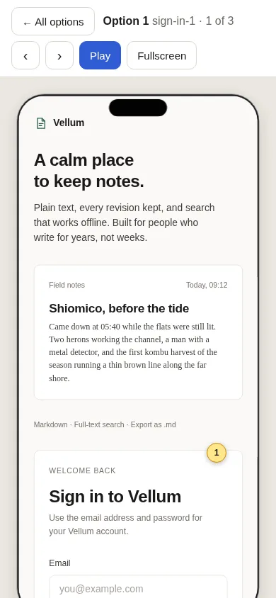

Start with a prompt.
Ask for a screen or a flow. Add --count 3 to get three directions instead of committing to the first one.
Prompt → HTML prototypes
A CLI that turns one prompt into several HTML design options.
For developers and coding agents choosing a direction before writing app code.

Node 22.18+ · Your own AI subscription, no API key
npm install -g first-draft-axifirst-draft-axi init --agent byokit:claude --model <model>first-draft-axi make "A notes app" --out notes.html && first-draft-axi view notes.htmlStep 2 uses your Claude subscription (Pro or Max) through your signed-in Claude CLI; replace <model> with a Claude model it supports. On ChatGPT, use byokit:codex with your signed-in Codex CLI. Other model routes · Open the URL that view prints.
Ask for a screen or a flow. Add --count 3 to get three directions instead of committing to the first one.
Compare the options side by side. Open one on the canvas with its desktop and phone side by side, and tap a spot to comment on it.
Refine one option with a follow-up prompt. It writes a new HTML file and leaves the original untouched.
Each option is a self-contained HTML file. Open one on the canvas at desktop and phone width side by side, beside its options, comments and a brief for your next change, or take a closer look in Fullscreen or Play. Viewing needs no model call. Options 2 and 3 of this run of three hit the engine's turn cap, so they hold the screens written so far.


First Draft needs nothing else: make, view and refine work on their own, and comments from people show as read-only pins on the canvas.
To get someone's pick, hand the options to sign-off, a sibling review board. It shows the options side by side, with an Open link under each one that opens it in Play in first-draft for the detail.
first-draft-axi post notes.html --title "Which notes app?" --recommend aThe CLI prints JSON, so an agent can run make and view on its own. Give it the agent skill and it knows the commands.